Vehicle Expenses Automated — full illustrated user manual (HTML for browsers). Edit source: docs/i18n/es/user-manual.md; regenerate with ./scripts/render-user-manual.sh.
Editar fuente (Markdown). Los navegadores y el lector de la aplicación abren el HTML renderizado:
- Web:docs/user-manual.html(regenerar con./scripts/render-user-manual.sh)
- Aplicación: Ayuda / Acerca de → manual completo (HTML incluido + capturas de pantalla)No dirija a los usuarios finales a URL
.mdsin formato: los navegadores solo muestran texto sin formato.
Seguimiento con cámara para repostajes de combustible y gastos del vehículo, con sincronización multidispositivo opcional y copia de seguridad en tus cuentas en la nube.
Este es el manual completo (capturas de pantalla + cada paso). En el teléfono, Menú → Ayuda es una guía de introducción más breve.
No se cubre aquí: Importar imágenes antiguas, experimento de alineación y experimento de bombeo (desarrollador/herramientas avanzadas).
Estos aparecen en las pantallas principales. Conocerlos ahorra mucha caza.
| Dónde | Icono/control | Qué hace |
|---|---|---|
| Barra superior | ☰ Menú (hamburguesa) | Abre el cajón de navegación |
| Barra superior | ⓘ (ayuda de la página) | Ayuda breve para la página actual (al lado del menú cuando esté disponible) |
| Barra superior | ?N (amarillo) |
Preguntas pendientes de revisión de importación: abre Revisión de importación |
| Barra superior | ! (rojo) | Un destino de hoja de cálculo o foto falló recientemente: abra Sincronización para solucionarlo |
| Barra superior | ☰ + ← | Informe de niños y lista de gastos muestran menú y atrás juntos; El centro de informes es solo menú |
| Configuración/edición de combustible | ← | Atrás (la configuración de la hoja de cálculo/edición de fotos y combustible permanece enfocada) |
| Llenado rápido | Círculo blanco (obturador) | Capture la pantalla del odómetro o de la bomba para OCR |
| Llenado rápido | Disco/Guardar | Guardar el repostaje (necesita un vehículo y al menos uno de odo/volumen/coste) |
| Llenado rápido | ↕ flechas (cambio de modo) | Alternar modo de odómetro frente a modo de bomba (costo/volumen). El borde verde resalta el grupo de campos activo |
| Llenado rápido | ↔ flechas (entre costo y volumen) | Intercambiar costo y volumen si OCR los coloca en los campos incorrectos |
| Llenado rápido | Zoom 1x / … | Relaciones de zoom de la cámara cuando la lente las admite |
| Relleno rápido (después de la captura) | Actualizar en el botón principal | Descartar vista previa y volver a cámara en vivo |
| Llenado rápido (durante el procesamiento) | X en el botón principal | Cancelar captura en curso/OCR |
| Gasto | Guardar | Ahorre el gasto |
| Gasto | Círculo de obturación | Tome una foto del recibo |
| Gasto | Galería | Elija una imagen de recibo de la biblioteca |
| Gasto | Retomar | Borre la foto del recibo actual y vuelva a disparar |
| Gastar / Gestionar Vehículos | + / − FAB | Ampliar la vista previa de la foto |
| Diálogo de puntos de referencia | Editar OCR | Corrija o agregue texto emblemático que los motores omitieron |
| Formularios de hoja de cálculo/fotografía | 🔍 Buscar | Busque en Google Drive una hoja o carpeta (después de iniciar sesión) |
Se pueden tocar los símbolos de moneda en los campos de costo y G/L en los campos de volumen: abra un pequeño menú para cambiar la moneda o galones versus litros para esa entrada.
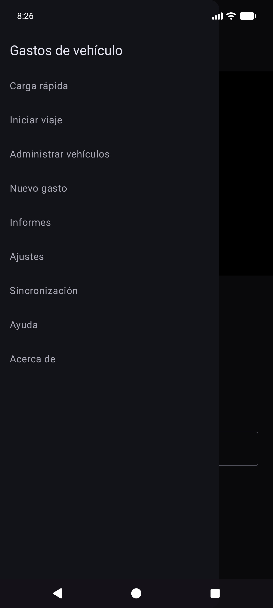
Cajón principal: Recarga rápida · Iniciar viaje · Administrar vehículos · Nuevo gasto · Informes · Configuración · Sincronización · Ayuda · Acerca de.
Cajón de experimentos (Configuración → Mostrar pantallas de experimentos): Experimento de alineación · Experimento de bomba · Importar imágenes antiguas.
A través del centro de informes (no del cajón principal): Lista de gastos · Historial de llenado.
El OCR y la combinación automática de vehículos funcionan mejor después de registrar cada vehículo con una foto de referencia del tablero, recortar el odómetro y ejecutar Discovery para que la aplicación almacene el texto de referencia para ese tablero. (La forma en que se eligen y combinan los puntos de referencia se documentará con más detalle en una actualización posterior).
Menú → Administrar vehículos. Elija un vehículo (o Agregar vehículo nuevo).
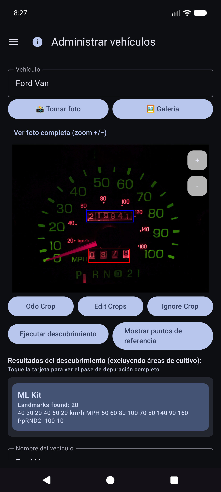
Después de Mostrar puntos de referencia, desplácese por la lista y corrija los valores. A los motores a veces les faltan dígitos pequeños (por ejemplo, un reloj 60 en la parte inferior derecha del grupo). Utilice Editar OCR para agregarlos o corregirlos para que la identidad del vehículo siga siendo confiable.
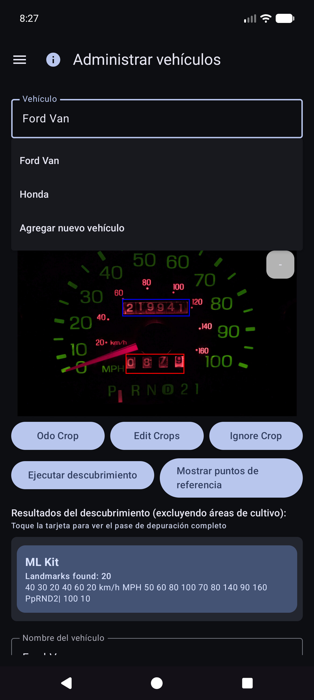
Aún puede usar la aplicación seleccionando un vehículo y escribiendo el odómetro, el volumen y el costo en Quick Fill; el OCR es opcional para todos los campos. La importación de galería funciona para la foto del tablero de referencia cuando prefieres no tomar fotografías en la aplicación.
Consejo: Después de la sincronización de la hoja de cálculo, las definiciones de vehículos (cultivos, puntos de referencia) se encuentran en la base de datos local; no es necesario volver a abrir Administrar vehículos para Quick Fill para usarlas.
La aplicación está diseñada para que varios teléfonos o tabletas puedan compartir los mismos datos de la flota y para que puedas guardar una copia de tus datos y fotos fuera del dispositivo. Esto se hace con los destinos que usted configura en sus cuentas o sus servidores autohospedados, no con una “nube de gastos de vehículos” administrada por la empresa que otras personas pueden ver.
| Amable | Qué almacena | Uso típico |
|---|---|---|
| Hoja de cálculo/sincronización tabular | Vehículos, llenados de combustible, gastos (filas y pestañas) | Fusión de múltiples dispositivos + copia de seguridad estructurada |
| Copia de seguridad de fotos | Imágenes binarias (guión/bomba/recibo/fotos de referencia) | Copia de seguridad de fotos + restaurar archivos faltantes |
Puede configurar múltiples destinos de cada tipo (límite flexible por tipo). Los trabajadores manuales Sincronizar ahora y en segundo plano ejecutan los habilitados.
El inicio de sesión y los tokens permanecen en el dispositivo para los proveedores que elija (Google, Microsoft, claves S3, URL autohospedadas, etc.). Los destinos están bajo control total del usuario: su cuenta de Google, su OneDrive, su depósito MinIO, su host EtherCalc, etc. No se comparte nada con otros usuarios de Gastos de Vehículos a través de un backend compartido.
Configurado en Menú → Sincronización → Sincronización de hoja de cálculo (también accesible desde las filas de resumen de Configuración). Opciones de recogida de primera clase:
| Objetivo | Notas |
|---|---|
| Hojas de cálculo de Google | Incumplimiento común; pestañas de Vehículos, Gastos y combustible por vehículo |
| Excelente | Libro de trabajo de Microsoft mediante encuadernación estilo Graph/OneDrive |
| EtherCalc | Salas de hojas de cálculo colaborativas autohospedadas |
| Otros → backends implementados | Baserow, NocoDB, Airtable, PocketBase, Supabase, Firebase, Zoho Sheet |
Diferido/aún no sin cabeza (incluido en Otros pero no completamente implementado): OnlyOffice, Collabora. Consulte también índice de autohospedaje.
CSV exportar/importar (ZIP del mismo diseño de pestaña) está disponible en Configuración como una copia de seguridad portátil, independiente de la sincronización en vivo.
Configurado en Menú → Sincronización → Copia de seguridad de fotos (también desde las filas de resumen de Configuración):
| Objetivo | Notas |
|---|---|
| GoogleDrive | Carpeta que elijas (buscar o pegar URL) |
| OneDrive | Cuenta de Microsoft + prefijo de ruta |
| T3 | AWS, Wasabi, Cloudflare R2, MinIO y otros puntos finales compatibles con S3 |
| Otro | almacenamiento respaldado por rclone (por ejemplo, WebDAV, SFTP y otros controles remotos seleccionados disponibles en el selector de la aplicación) |
Configure hojas de trucos para fotografías y objetivos tabulares autohospedados: [índice de autohospedaje] (referencia/self-host/INDEX.md).

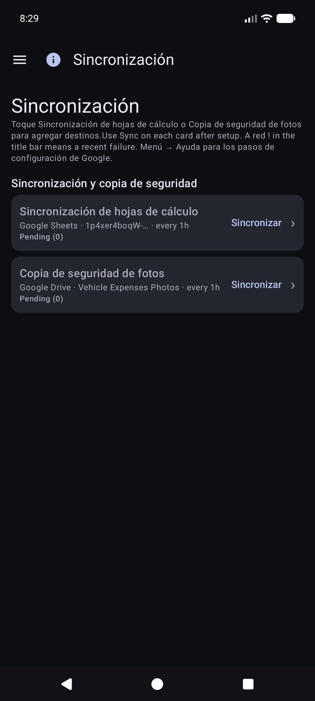

Vehículos, Gastos, Combustible - {nombre del vehículo}.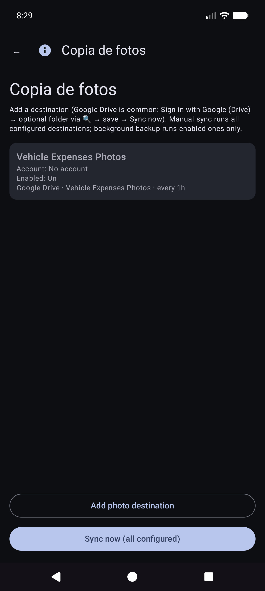
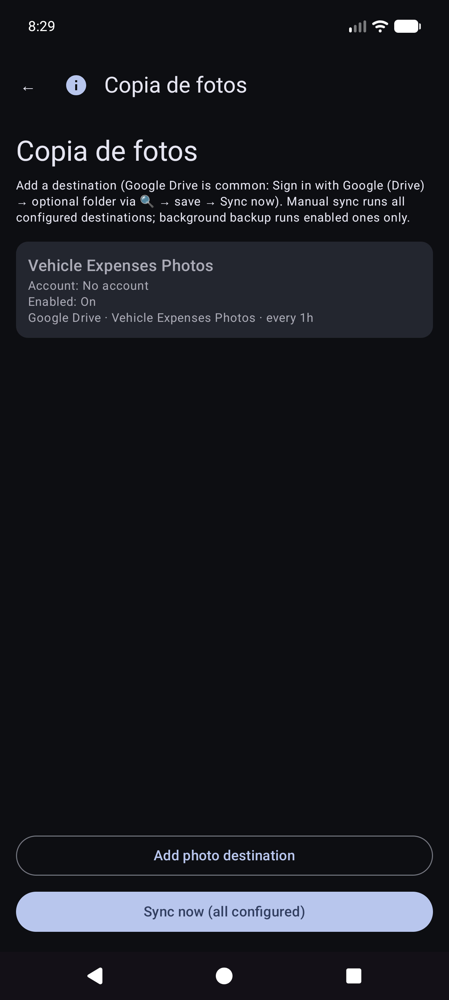

Manual Sincronizar ahora para fotos es un pase completo; La copia de seguridad en segundo plano normalmente procesa cargas solo pendientes según una programación.
Esta es la pantalla de inicio cuando abres la aplicación.
No es necesario que elijas el vehículo primero. Cuando los vehículos tienen puntos de referencia configurados en Administrar vehículos, Quick Fill detecta automáticamente qué vehículo de la imagen del tablero después de capturar el odómetro. Aún puedes abrir el menú desplegable Vehículo para anularlo si es necesario.
Permanezca en modo odómetro y encuadre el grupo. Instrucción: Apunte al odómetro. Toque el obturador para capturar.

OCR llena Odo e intenta hacer coincidir el vehículo con los puntos de referencia (revise ambos si es necesario). El botón principal se convierte en Reintentar para volver a disparar. La instrucción resume la lectura.


Permanece en Quick Fill para la siguiente parada (los campos se borran después de guardar). Trabaje completamente sin conexión; la sincronización se ejecuta más tarde en segundo plano cuando se configura.
Consejo en pantalla (debajo de la línea de instrucciones): Obturador = capturar · Disco = guardar · ↕ = modo odo/bomba · ↔ = costo/volumen de intercambio.
Menú → Nuevo gasto.

Menú → Informes → Lista de gastos: explore los gastos no relacionados con el combustible; abrir un elemento para editarlo.

Abra una fila de la lista. Proveedor, monto, categoría, vehículo y descripción correctos. Si el recibo solo está en la copia de seguridad de la foto (no hay un archivo local legible), use Obtener imagen del archivo cuando se muestre (funciona en destinos de fotos configurados).
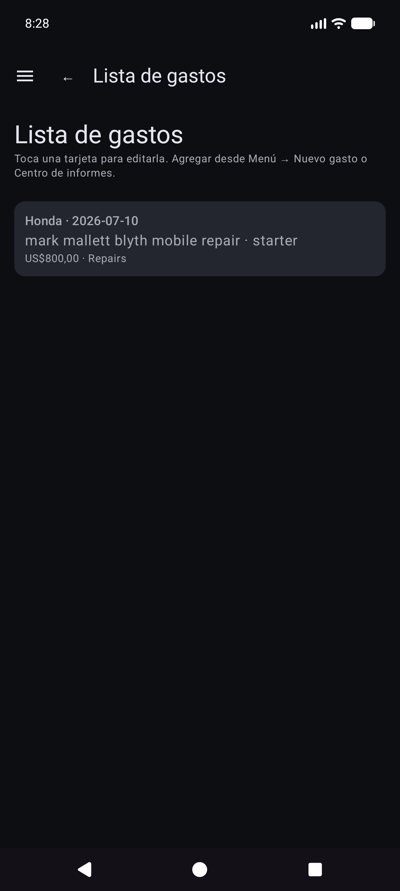
Menú → Iniciar viaje (después de Quick Fill en el cajón). Capture o ingrese el odómetro, elija el tipo de viaje y guárdelo con el ícono disco. Detener es un atajo para Personal ahora en la ubicación GPS retenida. Utilice ⓘ para recordatorios de control.
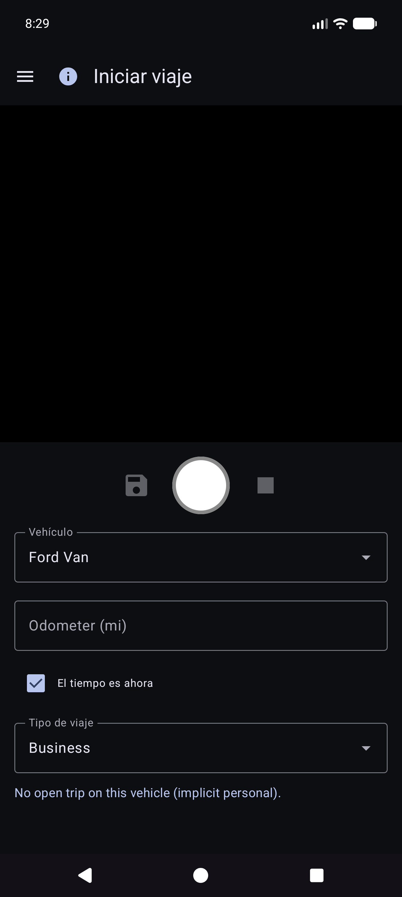
Los inicios de viaje se almacenan como filas de combustible con un Tipo de viaje (no llenados normales). Aparecen en Informes → Millas de viaje, no en Historial de combustible.
Menú → Informes abre el centro de productos (resumen de todos los tiempos + tarjetas de catálogo). Esta es la única superficie de informes de productos: no hay un elemento separado en el cajón "Informes y gráficos".

Abra una tarjeta para el modo de vehículo (Todos/Cada/Único), filtros de período, gráficos y compartir (TEXTO/CSV/PDF). Barra superior en informes de niños: ☰ + ← (y ⓘ cuando esté registrado).
La tarjeta del gráfico principal. Métricas opcionales (mpg, volumen/distancia como G/mi, precio unitario como $/G, costo/distancia, $ mensuales, millas de viaje, % de viaje por tipo) con contenedores Smooth y escalas Y independientes (economía a la izquierda; dinero y familias de viajes a la derecha).

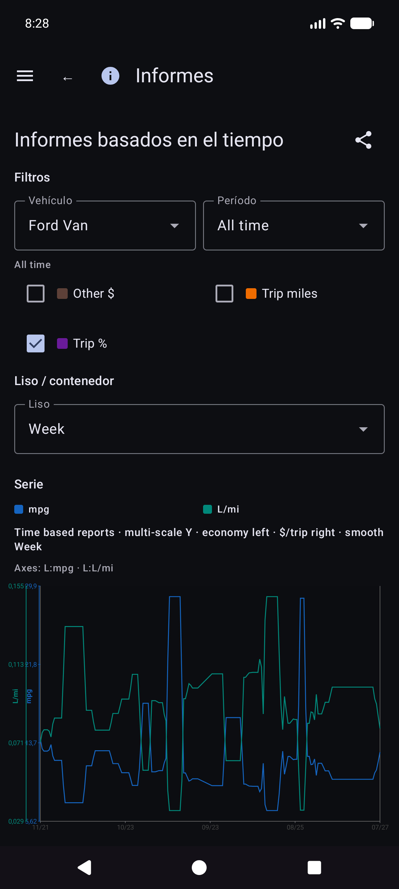
Detalles de matemáticas económicas: REPORTS_METRICS.md.
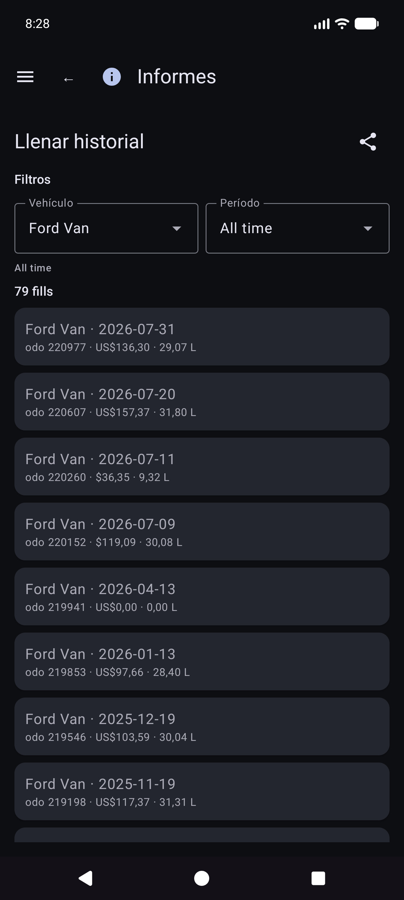
Informes → Millas de viaje: millas por tipo, gráficos y una lista de inicio de viaje/segmento cronológica. Toque un comienzo real para abrir Editar relleno para esa fila.

Desde Historial de repostaje, Historial de combustible o Millas de viaje, abra un repostaje. Diseño: vehículo y odómetro, moneda antes de costo, volumen, billetes. El tipo de viaje aparece solo cuando la fila es un inicio de viaje. La ubicación tiene un resumen más Detalles de la ubicación. Falta una foto local con identidad en la nube: Obtener imagen del archivo.
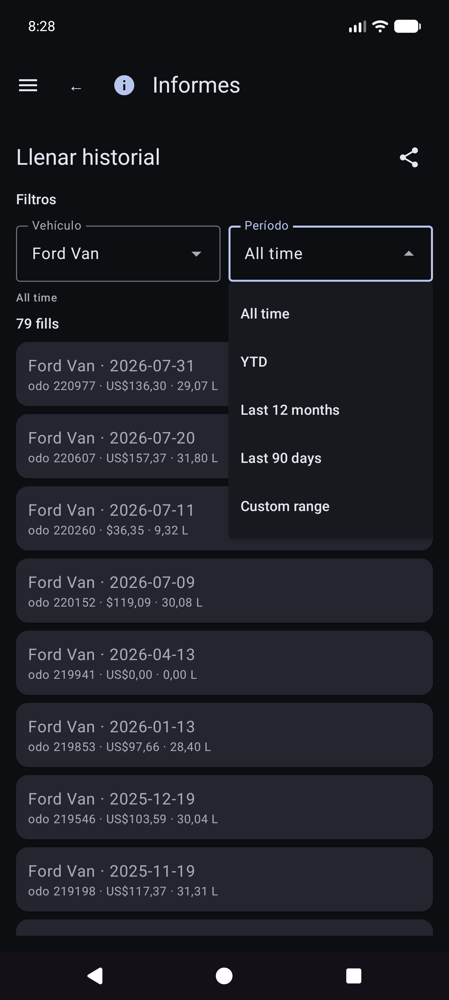
Otras tarjetas de catálogo incluyen gastos por categoría, resumen de vehículos y lista de gastos.
El dinero utiliza la moneda de cada fila cuando se establece. Los totales en monedas mixtas muestran subtotales por moneda (sin conversión de divisas silenciosa).
Menú → Sincronización es el centro para destinos de hojas de cálculo y fotografías (no solo oculto en Configuración).

Menú → Configuración.


Para destinos, prefiera Menú → Sincronización. Es posible que la configuración aún muestre filas de resumen que abren las mismas listas.
CSV exportar/importar (ZIP de pestañas de vehículos/gastos/combustible) está disponible en Configuración cuando lo ofrece la versión actual.
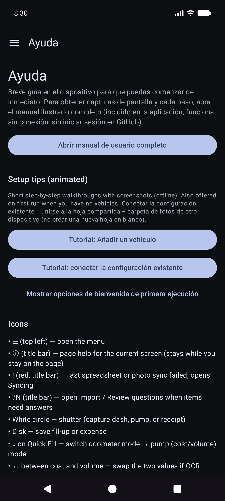